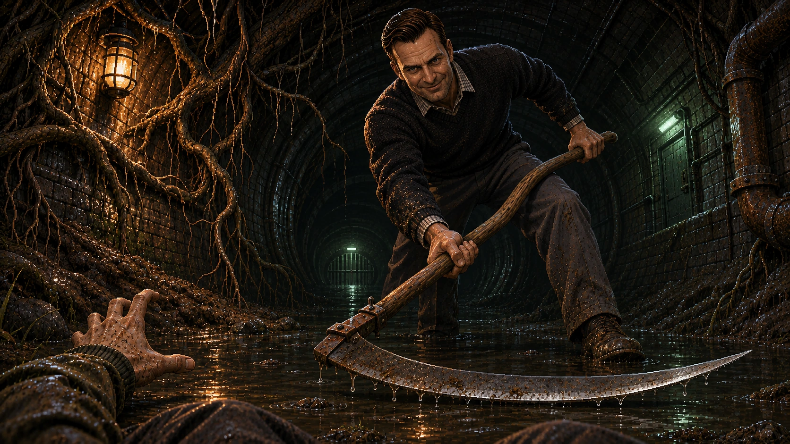

Under the Green
Read the signals. Beat the surge.
Joe is still coming.
The stop symbol means impassable. The triangle warns of pressure. Cross on the green chevron and reach the far striped line before the jets restart. Amber and knocking pipes warn you.
A surge throws you back toward Joe. Waiting gives him time to reach you. Choose a longer marked dry path or cross in time to leave him behind the water.
Redirect the pump-house bypass, then reach the keeper’s room and close the sluice.
Controls & comfort
WASD or arrows move relative to your view. Mouse or drag to look. Shift runs; C crouches; R slows to listen; Q glances behind without steering; E uses. Saved Level 1 movement bindings apply here. F toggles fullscreen. Controller: left stick moves, right stick looks, RT or RB runs, LB crouches, LT slows to listen, A uses, R3 glances, Start pauses. Touch: hold the movement pad and drag the scene to look.
Under the Green has saved sound or motion overrides.
Sets the maximum scene resolution across chapters. On slower devices, detail may adjust automatically for smoother play. Text and controls stay sharp.
With touch Run toggled on, use one thumb to move and the other to look. Tap Run again to walk. Pause or an interrupted touch clears it.
Pressure changes the pursuit pace and attack warning. Water phases and routes stay the same.
Groundskeeper’s record
“The 18th’s nursery swale has never drained properly. Keep heavy equipment off saturated turf. The bypass lever is latched: once it is open, leave it open. The keeper’s sluice closes from inside.”
Preparing the underground course…
No checkpoints. Every new attempt starts at the drain entrance.